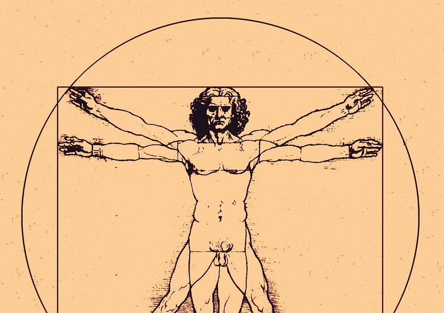

Mindset & Wellness
I Have Found the Imbalance

You've probably heard of it, imbalance. This is an area that I've been studying and working on myself for quite some time, for over 10 years now. It applies to every area of your life, and it's good to know that the imbalances you see and feel in your body are directly correlated to the imbalances you think about in your mind. Most people seem to think the majority of the imbalances they have in their personal lives are the result of inherited traits or genetic dispositions that are irreversible, and that simply is not factual. You can be however you want to be.
However, I'd like to set things straight and say that nobody is perfect. Some people might act that way, but the reality holds true that even the President of the United States is only liked by about half the population, give or take a few million people. For a position of 'power' that is a staggering difference in attitude between everybody involved, another imbalance that will have to be figured out by one way or another. Jim Rohn, an online mentor of mine said, "Every life form seems to strive to its maximum except human beings. How tall will a tree grow? As tall as it possibly can. Human beings, on the other hand, have been given the dignity of choice. You can choose to be all you can be, or you can choose to be less. Why not stretch up to the full measure of the challenge and see what all you can do?"
I've always wanted my body to be as strong, flexible, and proportioned as possible while doing my workouts, because why not? But only until recently have I figured out how to speed up this balancing process. As I was doing a few side planks this morning my left side seemed to fatigue less quickly than my right side, and as a movement specialist my mind was quick into thinking, "This is a problem, it will be fixed SOON.. otherwise everything will be done predominantly with the right side of my body." That's when it clicked in my head that the real imbalance lies within your thought process about the imbalance.
Welcome, consistency. I've said it before, and I'll say it again, your issues can be solved with consistent daily effort. I don't mean only physical effort, I mean mentally as well. I don't know anyone that enjoys the thought that a greater goal is out of reach for them to achieve, but if you can train yourself into thinking that your problems will be solved then who knows? I would personally like to find out. I have already chosen to leave all the anger, hatred, and bitterness about my problems behind. It is a waste of both mine and everyone else's time to talk negatively anyways, so why bother thinking about the negative?
If you're having any imbalances in your life, maybe in your body, maybe in your relationships, maybe in your finances, I can assure you they will not go away until you change them. If you don't like how things are, change it. Nobody ever said this is the way you are, this is the way you have to be, forever, no turning back. For my previous example, you better believe I'm going to be doing longer side planks on my left side until I feel centered. For somebody that is struggling with their relationships or finances, the choice is up to them if it is worth it to continue doing the same things over and over again or to try taking a different approach. It takes time, it's going to be really hard, and you're going to have to work on these imbalances everyday, but I like to believe that you can truly be whatever you want to be regardless of any outside noise or influence. You just have to say it to yourself... it's not, "If I could, I would," it's, "If I can, I will." I'm here to let you know you can.